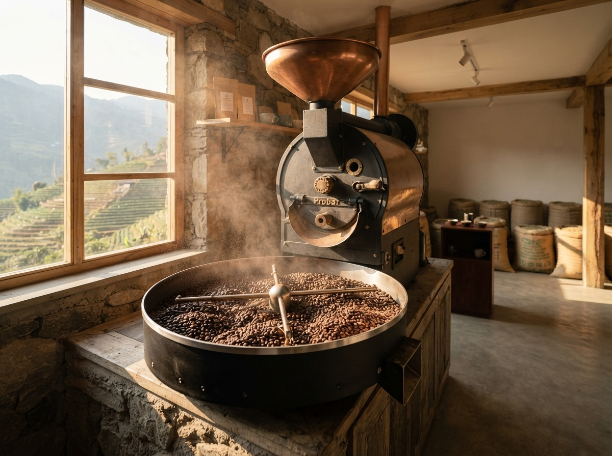

Missão
Torrar e entregar cafés especiais de origem rastreável com frescor máximo, transformando o ritual diário do café em uma experiência memorável.
A Café Aroma Serrano nasceu no interior do estado com o propósito de revelar na xícara a identidade pura das lavouras de altitude. Conduzida pelo Sr. Ricardo, a torrefação iniciou suas atividades conectando pequenos produtores locais a apreciadores que buscam sabor autêntico e transparência na origem.
Durante anos, construímos nossa reputação nas feiras da região e no atendimento próximo via WhatsApp, onde cada conversa ajudava clientes a descobrirem novos perfis sensoriais, notas de caramelo, chocolate amargo e frutas amarelas.
Hoje, unimos o cuidado da torra artesanal em pequenos lotes à praticidade digital, levando cafés recém-torrados da serra diretamente para a sua casa.

Torrar e entregar cafés especiais de origem rastreável com frescor máximo, transformando o ritual diário do café em uma experiência memorável.
Consolidar-se como referência regional em cafés especiais artesanais, unindo transparência produtiva, estética contemporânea e atendimento humano.
Respeito ao produtor da serra, rigor técnico em cada curva de torra, honestidade comercial e simplicidade elegante em tudo o que fazemos.